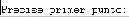
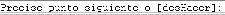

2. Iniciar AutoCAD: el entorno de trabajo.
Cuando iniciamos AutoCAD por primera
vez aparece la pantalla de un asistente que nos guiará en la creación de un
nuevo dibujo. Podemos abrir un archivo guardado o iniciar uno nuevo.
1. Pulsa en el segundo botón (valores por defecto).2. Pulsa en Aceptar para iniciar el nuevo dibujo.
A la vista tenemos la pantalla de trabajo de AutoCAD.
La ventana de AutoCAD
- Ratón: Las acciones que realizaremos en AutoCAD serán con el ratón y el teclado. Hay que tener en cuenta que el ratón tiene la posibilidad de utilizar el botón derecho para acceder a menús rápidos.
1. Pulsa el botón derecho sobre diferentes zonas de la pantalla (zona de trabajo, barras de herramientas...) y observa su contenido.
- El cursor: según donde situemos el cursor del ratón, éste adopta diferentes formas. Dentro de la zona de dibujo adopta la forma de una cruz. Si lo situamos sobre las barras de herramientas, adopta la forma de una flecha.
- El visor de coordenadas: en la parte inferior izquierda de la pantalla se encuentra el visor de coordenadas que nos informará de la posición exacta del cursor en la pantalla:
2. Mueve el ratón por la zona de dibujo y observa cómo cambian los números del visor de coordenadas.
3. Pulsa la tecla F6 y observa cómo se desactiva la visualización del visor de coordenadas.
-
La rejilla: para facilitarnos la labor de dibujar líneas o cualquier
objeto, podemos activar la rejilla de la zona de trabajo. La rejilla es
una malla de puntos que nos permitirá ajustar los objetos en el punto que
deseemos, aparte de movernos por la pantalla. La rejilla se activa y desactiva
de dos formas:
- Pulsando el botón de la barra inferior
- Pulsando la tecla F7
4. Pulsa repetidamente el botón mencionado y tecla mencionados y observa el efecto en la pantalla.
-
Forzar el cursor: aún con la rejilla en pantalla, es muy difícil ajustar el
dibujo o el puntero del ratón en un punto determinado. Por ello, es posible forzar
el cursor a que se desplace por los puntos de la rejilla. Para ello,
podemos:
- Pulsar el botón de la barra inferior
- Pulsar la tecla F9
5. Pulsa la tecla F9 y mueve la flecha del ratón por la pantalla. Observa cómo el puntero del ratón se ajusta automáticamente a los puntos de la pantalla. Observa también el visor de coordenadas; cambia de 10 en 10 unidades.
- La ventana de Comandos: es posible la utilización de órdenes a través del teclado. También es posible que en muchas ocasiones, podamos variar la acción de una orden mediante la ventana de comandos. Se encuentra en la parte inferior de la pantalla, sobre la barra de estado:
Más adelante profundizaremos en la actuación de esta ventana. Durante el curso, la utilizaremos a menudo. Como introducción, prueba a hacer lo siguiente:
6. Escribe la orden LINEA.
7. Observa el mensaje que aparece: 
8. Pulsa un clic en cualquier parte de la zona de trabajo.
9. Observa el siguiente mensaje: 
10. Pulsa un clic en cualquier otra parte de la pantalla.
Ahora podemos ir pulsando clics en diferentes zonas de la pantalla. Para terminar de dibujar la línea, podemos:
- Pulsar la tecla Esc
- Pulsar la tecla Intro
11. Termina el dibujo de la línea.
- Las barras de herramientas contienen, agrupados por temas, los botones que son necesarios para crear y modificar nuestros dibujos. Para ver la lista de las barras de herramientas disponibles, haz:
Visualizamos un cuadro de diálogo en el que, marcando la barra deseada, la obtendremos en nuestra pantalla. Como en todo programa de Windows, la barra se podrá arrastrar hasta la zona en la que deseemos.12. Haz clic sobre el menú Ver > Barras de herramientas.
13. Marca las barras estándar, dibujo y modificar
14. Cierra el cuadro de diálogo.
15. Coloca las barras dibujo y modificar en el margen izquierdo de la pantalla.